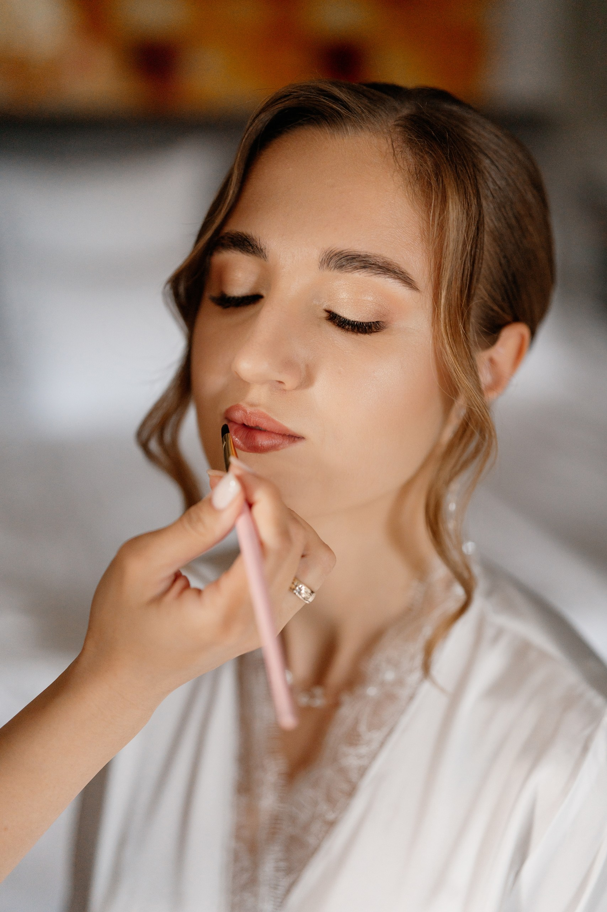
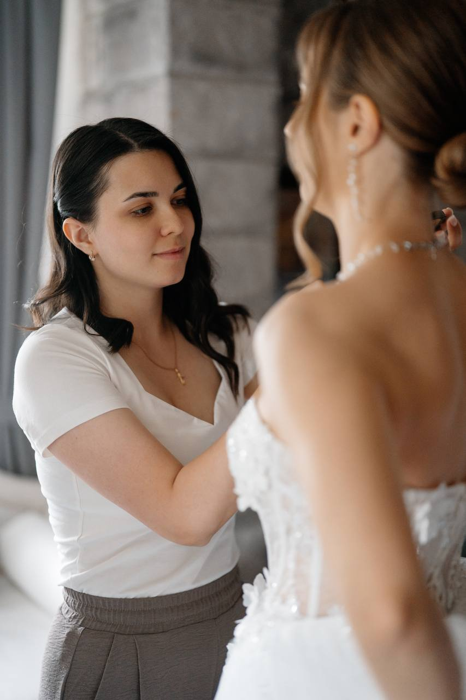

01

Подготовка кожи лица
- За 2–3 дня Сделайте деликатный пилинг или скраб. Это поможет уходовым средствам работать эффективнее, а тональному крему — лечь идеально ровно.
- Накануне вечером Уделите 15 минут проверенной увлажняющей маске для лица.
- Забота о губах За несколько дней до свадьбы регулярно наносите бальзам, а на ночь используйте питательную маску для губ, чтобы избежать шелушений.
- Утро свадьбы Если есть склонность к утренней отечности, отлично сработают гидрогелевые патчи под глаза.
Чего стоит избегать:
- Любые салонные процедуры (коррекция бровей, наращивание ресниц, чистки лица) планируйте заранее — минимум за 3 - 5 дней до торжества.
- Не экспериментируйте с новой косметикой накануне.
- Минимизируйте соленую пищу и алкоголь за день до свадьбы, чтобы избежать отеков.
02

Подготовка волос
- Чистота и сухость Для безупречного объема и стойкости прически волосы должны быть абсолютно чистыми и на 100% сухими.
- Когда мыть Идеальный вариант — вымыть голову утром в день свадьбы и высушить феном. При очень ранних сборах допустимо вымыть и тщательно просушить волосы накануне вечером.
- Как мыть Промойте кожу головы шампунем дважды. Кондиционер или бальзам наносите строго от середины длины к кончикам.
- Важное правило Пожалуйста, не используйте тяжелые питательные маски, масла и несмываемые кремы. Они утяжеляют волос, и укладка может быстро распасться.
* Перед работой с горячими инструментами я всегда наношу профессиональную термозащиту.
03

Место для сборов
- Свет Место у окна. Естественное освещение — лучшее условие для макияжа.
- Пространство Небольшой столик или любая рабочая поверхность, где я смогу разложить косметику и инструменты.
- Техника Доступ к двум розеткам (под горячие инструменты я всегда стелю термоковрик).
- Стулья В идеале — один высокий (барный) стул, в отелях его часто приносят по запросу. Если его нет, подойдут два обычных стула, чтобы мы могли сесть друг напротив друга.
- Зеркало Будет здорово расположиться напротив зеркала, чтобы вы могли контролировать и наслаждаться процессом создания вашего образа.